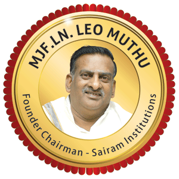
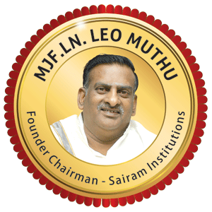
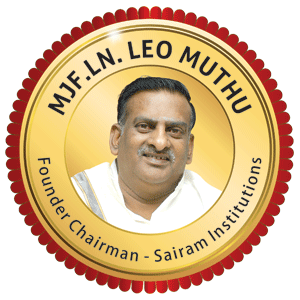

*The Institute of Electrical and Electronics Engineers (IEEE) is a globally recognized organization dedicated to advancing technology for humanity. Founded in 1963, IEEE has grown to become the world's largest professional association for the advancement of technology, with over 400,000 members across more than 160 countries.
*At its core, IEEE fosters innovation through collaboration, providing a platform for engineers, scientists, and researchers to share knowledge and develop new ideas. The organization publishes a vast array of journals, sponsors conferences, and develops standards that guide the industry.
* IEEE also plays a crucial role in education and professional development. Through various programs and resources, it supports lifelong learning and helps professionals stay at the forefront of technological advancements. Whether you’re a student, a seasoned professional, or simply passionate about technology, IEEE offers opportunities to connect, learn, and contribute to groundbreaking developments in fields such as electrical engineering, computer science, robotics, and telecommunications.
JOIN US IN SHAPING THE FUTURE
IEEE NANO TECHNOLOGY
INTRODUCTION TO IEEE NANO TECHNOLOGY:
The IEEE Nanotechnology Council (NTC) is a leading organization dedicated to promoting and advancing the field of nanotechnology. Established under the IEEE umbrella, the NTC serves as a global platform for researchers, professionals, and students involved in the study and application of nanotechnology.
Nanotechnology involves manipulating materials at the nanoscale—typically between 1 and 100 nanometers—to create new properties and functionalities that are not possible at larger scales. This emerging field has vast implications across various domains, including electronics, medicine, energy, and environmental science.
The NTC focuses on fostering innovation through collaboration, hosting international conferences, publishing cutting-edge research in its journals, and facilitating networking opportunities among its members. By addressing critical global challenges, such as energy efficiency and healthcare advancements, the IEEE Nanotechnology Council plays a crucial role in shaping the future of technology and its applications.
KEY OBJECTIVES
Advancement of Knowledge:Facilitate research and innovation in nanotechnology by organizing conferences, workshops, and seminars.
Networking Opportunities: Provide a forum for professionals to connect, collaborate, and share ideas through publications and events.
Educational Resources: Offer educational materials and resources to help members stay informed about the latest trends and technologies in the field.
ACTIVITIES:
Conferences and Symposia: The NTC sponsors and organizes conferences focused on nanotechnology topics.
Publications: It publishes journals, newsletters, and other resources to disseminate research findings and industry news.
Technical Committees: Form various committees to focus on specific areas within nanotechnology, such as nanomaterials, nanoelectronics, and biomedical applications.
MEMBERSHIPS:
Membership in the NTC is open to IEEE members and those interested in nanotechnology, providing access to resources, networking opportunities, and the latest research in the field.
GLOBAL REACH:
The NTC has a global presence, collaborating with other organizations, institutions, and councils to promote nanotechnology research and applications worldwide.
For more information, you can visit the official IEEE Nanotechnology Council website or their social media channels to stay updated on events and resources.
IEEE AT SAIRAM
Research Publications:
Members may have published papers in reputable journals, contributing to advancements in nanotechnology.
Workshops and Conferences:
Hosting events to disseminate knowledge, share research findings, and facilitate networking among students and professionals.
Collaborations:
Partnering with industry and academic institutions for research projects and internships.
Student Projects:
Supporting innovative student-led projects that utilize nanotechnology in various applications, such as healthcare, electronics, and materials science.
Outreach Programs:
Engaging with local communities and schools to promote STEM education and awareness about nanotechnology.
AwardS and Recognition:
Members or the council itself may have received awards for their contributions to the field.

*** Our honorable DR.saiprakash sir
Our Sairam College has made impressive strides in promoting IEEE standards and the Sustainable Development Goals (SDGs), showcasing a strong commitment to innovation and social responsibility. The institution has actively integrated these frameworks into its curriculum and extracurricular activities, fostering a culture of awareness and engagement among students. By organizing workshops, seminars, and collaborative projects, the college encourages students to explore the intersection of technology and sustainability.
Furthermore, Oue Sairam College's initiatives not only enhance students' technical skills but also empower them to think critically about their impact on society and the environment. This holistic approach not only prepares students for successful careers but also instills a sense of responsibility towards global challenges. Through these efforts, the college is setting a benchmark for educational institutions, demonstrating that academic excellence can go hand in hand with a commitment to creating a better world.


 
